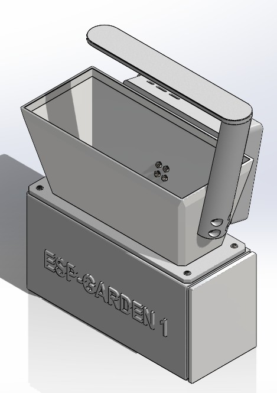
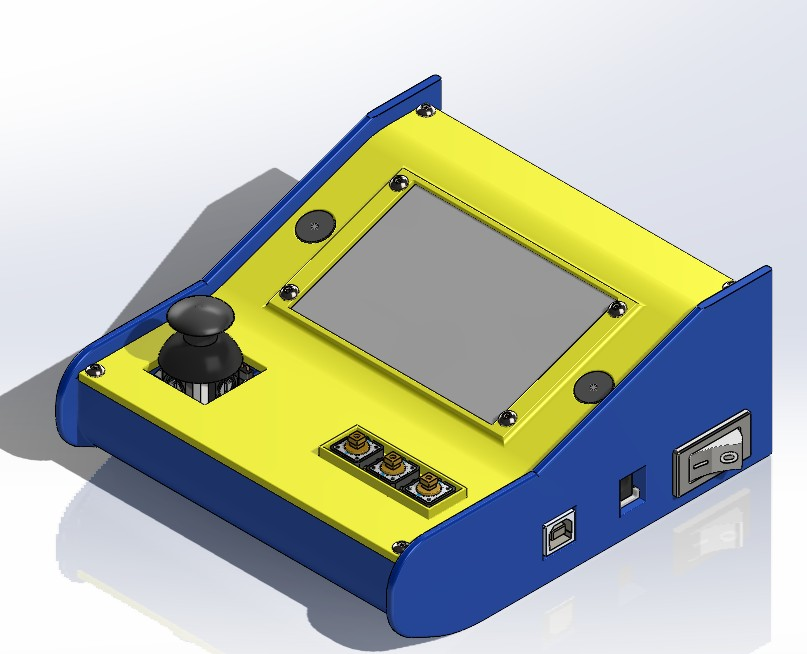
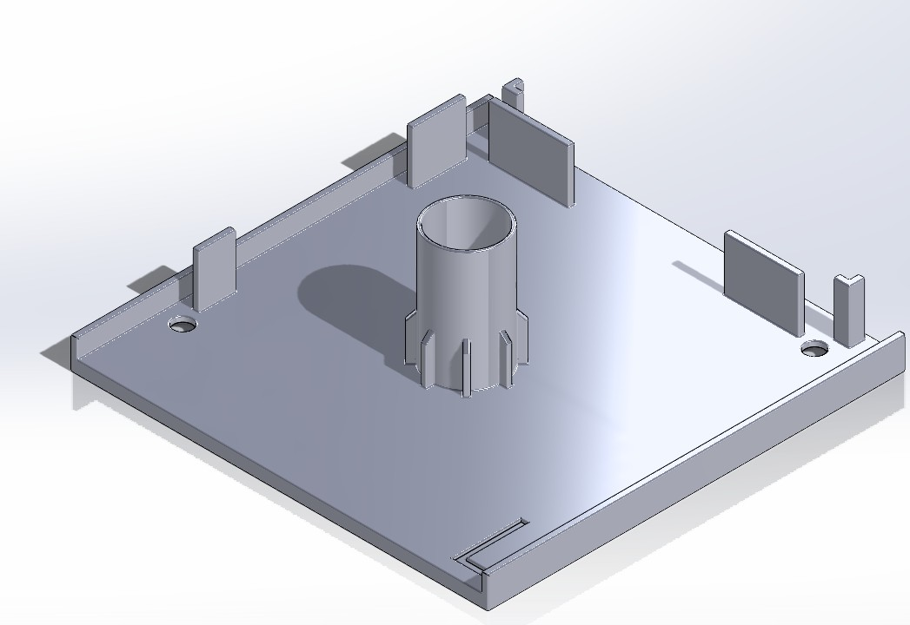
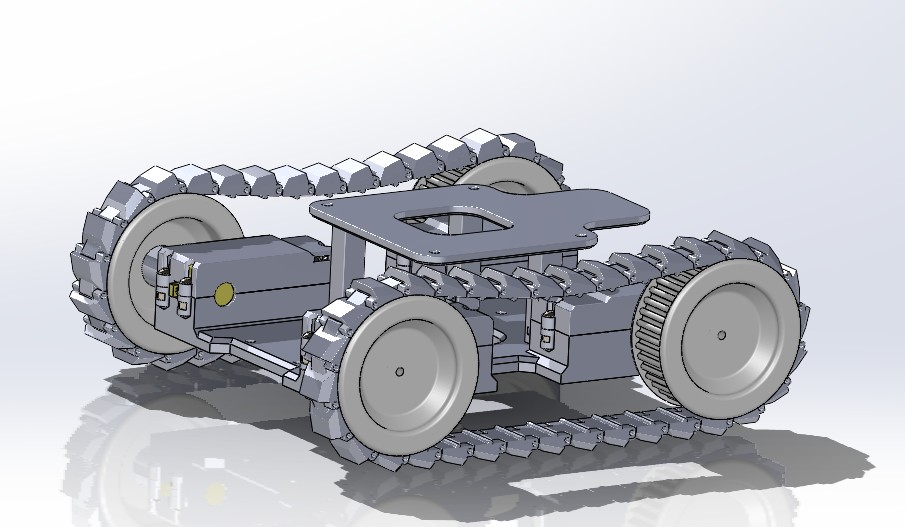
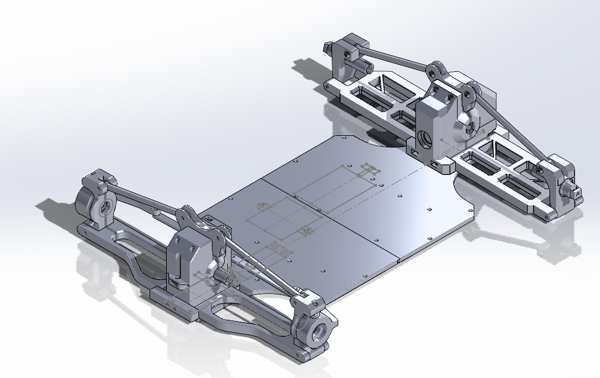
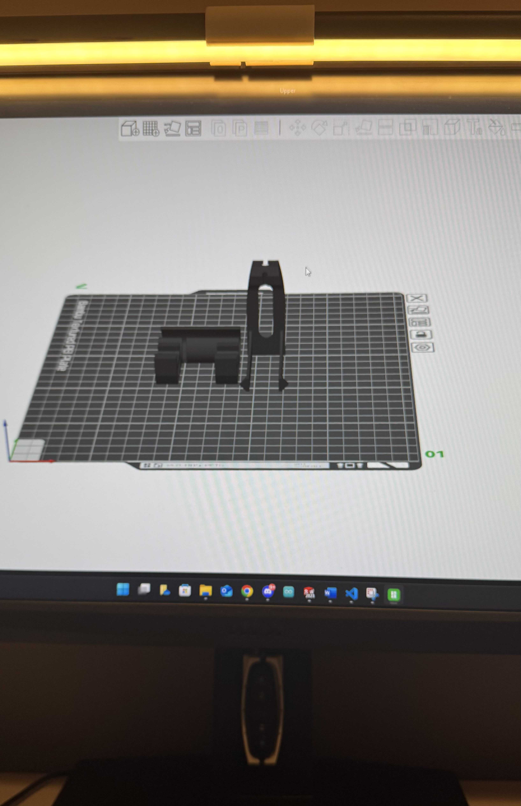

January 7th 2025
My name is Sayuj Stephen. I am currently a third year Mechanical Engineering Student at the University of Calgary. Over the past three years I've been curious about different things and tried my hands at projects to further develop my understanding and have some fun. Below is the culmination of those projects

What?
A Automated garden that is capable or measuring soil data and present this information and make decisions on when watering is required
How?
The ESP 32 Microcontroller was used in Arduino IDE. Using C++ I created a program that would measure the Capacity of the soil using a Capacity Soil Moisture Sensor v1.2.
With this information the ESP 32 then activates the water pump when the capacitive value reaches a certain threshold. In tandem with this a DHT11 humidity and temperature sensor along with a photoresistor was also added increasing the capabilities of the system to display humidity and temperature data
as well as control the LED lights when the light level in the room reached a certain level to simulate sunlight.
Results
This project was my first introduction to the ESP 32 and the ESP 32 breakerboard.This project was a sucess in that it is able to do eeverything that it was supposed to. It is able to make decisions based on the data from the soil.
Future Plans
In the future I hope to utilize the ESP 32 platform to add bluetooth connectivity to the garden. With this the garden will be able to display the information connected by the sensors directly onto the phone via an app.

What?
The goal of this project was to create a portable Arduino game console using the Arduino MEGA 2560
How?

Part designed for Stephens Blinds & Shades this is a bracket attachment for Korean Zebra Blinds. Through careful measurement and multiple design iterations these serve as a perfect replacemetn for existing brackets. However their structural intergrity due to 3D printing is volatile and I am currently in the process of trying out
new materials in an effort to improve strength and durability of the parts.

Currently my biggest project yet. This project aims to utilize the ESP32 to its full extent, controlling 4 independent motors using motor controllers. This aim of this project
is to create a rover that can be remotely controlled but also traverse its environment autonomously. Currently the rover is able to move thanks to a connection with a joystick.

This is the latest iteration of the RC car. Unfortunately due to a bug I lost most of the files to the orignal version of the RC car. Currently this model aims to integrate metal gears into the system to
improve the logevity of the system as the previous model had used plastic gears which did not last long due to the high RPM of the motors.

What?
This project aims to replace the flexible Gooseneck clamp of a Desk Lamp for a sleek and compact mounting solution. Currently the Flexible Gooseneck clamp
is too large and takes up too much room.
How?
The measurements of the lamp part was taken after disassembly of the lamp. Many design iterations were considered and modelled using SOLIDWORKS and then 3D printed to test fit and functionality.
Result
The picture above shows the final design of the product. The main lamp is mounted directly onto the computer monitor using hooks which attach directly onto the back of the monitor (Model on the left). The controls of the lamp is attached to the center of the monitor and held in
place using carefully designed extrusions which hold tension against the wall of the monitor and the cables that are present (model on the right). In conclusion through this project I was able to replace the Gooseneck clamp and
create a simple and effective solution, which as an added benefit also improved the cable management of the overall system.